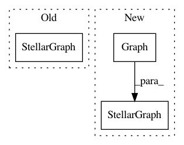

fba856cbbe5a634656361d8abc86630e6e9f9dfe,tests/data/test_heterogeneous_breadth_first_walker.py,,create_simple_test_graph,#,22
Before Change
in StellarGraph format.
g = StellarGraph()
g.add_nodes_from([0, 1, "5", 4, 7], label="user")
g.add_nodes_from([2, 3, 6], label="movie")
After Change
in StellarGraph format.
g = nx.Graph()
g.add_nodes_from([0, 1, "5", 4, 7], label="user")
g.add_nodes_from([2, 3, 6], label="movie")
g.add_edges_from([(1, 2), (1, 3), ("5", 6), ("5", 3), (4, 2)], label="rating")
g.add_edges_from([("5", 4), (1, 4), (1, "5")], label="friend")
g.add_edges_from(
[(7, 7)], label="friend"
) // isolated node with only a link back to itself
return StellarGraph(g)
def create_multi_test_graph():
In pattern: SUPERPATTERN
Frequency: 4
Non-data size: 3
Instances
Project Name: stellargraph/stellargraph
Commit Name: fba856cbbe5a634656361d8abc86630e6e9f9dfe
Time: 2019-12-12
Author: 52440942+geoffj-d61@users.noreply.github.com
File Name: tests/data/test_heterogeneous_breadth_first_walker.py
Class Name:
Method Name: create_simple_test_graph
Project Name: stellargraph/stellargraph
Commit Name: e78ff4e8d17073979c997576faf94cec3d4e0152
Time: 2018-09-09
Author: docherty@gmail.com
File Name: tests/data/test_stellargraph.py
Class Name:
Method Name: example_stellar_graph_1
Project Name: stellargraph/stellargraph
Commit Name: e78ff4e8d17073979c997576faf94cec3d4e0152
Time: 2018-09-09
Author: docherty@gmail.com
File Name: tests/data/test_stellargraph.py
Class Name:
Method Name: example_hin_1
Project Name: stellargraph/stellargraph
Commit Name: fba856cbbe5a634656361d8abc86630e6e9f9dfe
Time: 2019-12-12
Author: 52440942+geoffj-d61@users.noreply.github.com
File Name: tests/core/test_types.py
Class Name:
Method Name: example_graph